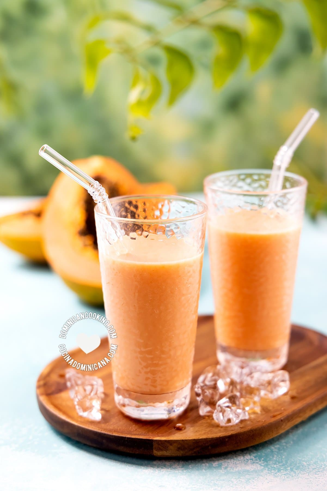

<!DOCTYPE html>
<html>

<head>
    <title></title>
</head>

<body>
</body>

</html>

<head>

    <title> batida de lechosa:</title>

</head>

<body style="background-color:cornsilk;">

    <h1 style="color: blue;">batida de lechosa:</h1>

    <p>batida de lechosa </p>

    <p> la batida de lechosa es la mas popular en la republica dominicana.
    </p>

    


    <div>

        <h2 style="color: aqua;"> ingredientes</h2>
        <ul>
            <li>1 lechosa </li>
            <li>1 leche evaporada</li>
            <li>3 cucharadas de azucar</li>
            <li>1 limon</li>
            <li>2 tazas hielo</li>

        </ul>
    </div>
    <div>
        <h2 style="color: brown;"> paso a paso</h2>
        <ol> 
            <LI>pica la lechosa hechala en la licuadora,despues hechale la leche,el hielo,y la azucar y el limon.</LI>
        <LI> despues licuala por 3 minutos despues que ya este preparada sirvela y listo.</LI></ol>

        <iframe width="560" height="315" src="https://www.youtube.com/embed/b6LL-_ugdkk?si=5abWc2dKlvcnaONj"
            title="YouTube video player" frameborder="0"
            allow="accelerometer; autoplay; clipboard-write; encrypted-media; gyroscope; picture-in-picture; web-share"
            referrerpolicy="strict-origin-when-cross-origin" allowfullscreen></iframe>
    </div>


    <h6> esta receta fue copiada de la pagina:https://www.cocinadominicana.com/batida-de-lechosa#wprm-recipe-container-14977 </h6>

    <a href="inicio.html"> 
        <button> volver a inicio</button>
    </a>

</body>

</html>